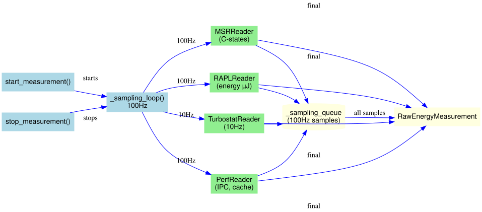
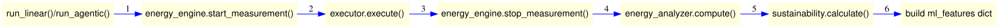

Adding New Hardware Readers¶
This guide explains how to extend A-LEMS by adding new hardware readers for additional sensors or metrics.
🔍 Reader Architecture¶
All hardware readers follow a common interface pattern:
- Base Reader (abstract)
read()→ Dict[str, Any] (required)calibrate()(optional)get_metadata()(optional)
Concrete implementations:¶
RAPLReader- Intel RAPL energy countersMSRReader- Model-specific registers (C-states, ring bus)PerfReader- Performance counters (instructions, cache)TurbostatReader- CPU frequency, temperatureSensorReader- Thermal zone temperaturesSchedulerMonitor- Context switches, interrupts

📋 Reader Requirements¶
Mandatory Methods¶
| Method | Purpose | Returns |
|---|---|---|
__init__(self, config) |
Initialize with hardware config | None |
read(self) |
Take a single reading | Dict of metric → value |
get_metadata(self) |
Return reader metadata | Dict of static info |
Optional Methods¶
| Method | Purpose | When to Implement |
|---|---|---|
calibrate(self) |
Perform calibration | Sensor needs offset |
sample(self) |
High-frequency sampling | Supports >10Hz |
close(self) |
Clean up resources | Uses file handles |
🔧 Harness Integration¶

🏗️ Step-by-Step Implementation¶
Step 1: Create the Reader Class¶
Create a new file in core/readers/:
# core/readers/my_new_reader.py
import logging
from typing import Dict, Any, Optional
from pathlib import Path
logger = logging.getLogger(__name__)
class MyNewReader:
"""
Reads [YOUR SENSOR] data from [SOURCE].
This reader provides:
- Metric 1: Description (units)
- Metric 2: Description (units)
- Metric 3: Description (units)
"""
def __init__(self, config: Dict[str, Any]):
"""
Initialize the reader with hardware configuration.
Args:
config: Hardware config dict from hw_config.json
Expected to contain:
- paths: Dict of sensor paths
- settings: Reader-specific settings
"""
self.config = config
# Extract paths from config
self.paths = config.get('paths', {})
self.settings = config.get('settings', {})
# Validate required paths
required_paths = ['sensor1', 'sensor2']
for path_name in required_paths:
if path_name not in self.paths:
logger.warning(f"Missing path: {path_name}")
# Open file handles if needed
self._open_handles()
logger.info(f"Initialized {self.__class__.__name__}")
def _open_handles(self):
"""Open file handles for continuous reading."""
self.handles = {}
for name, path in self.paths.items():
try:
self.handles[name] = open(path, 'r')
except Exception as e:
logger.error(f"Failed to open {path}: {e}")
def read(self) -> Dict[str, Any]:
"""
Take a single reading from all sensors.
Returns:
Dictionary mapping metric names to values.
Example: {'temperature': 45.2, 'voltage': 12.3}
"""
readings = {}
for name, handle in self.handles.items():
try:
handle.seek(0)
value = handle.read().strip()
readings[name] = self._parse_value(value)
except Exception as e:
logger.error(f"Failed to read {name}: {e}")
readings[name] = None
return readings
def _parse_value(self, raw: str) -> float:
"""
Parse raw string value to float.
Override this for custom parsing logic.
"""
try:
return float(raw)
except ValueError:
return 0.0
def get_metadata(self) -> Dict[str, Any]:
"""
Return static metadata about this reader.
Returns:
Dict with:
- name: Reader name
- version: Reader version
- units: Dict of metric → unit
- description: Brief description
"""
return {
'name': 'My New Reader',
'version': '1.0.0',
'units': {
'metric1': '°C',
'metric2': 'V',
'metric3': 'Hz'
},
'description': 'Reads data from custom sensor',
'sampling_rate_hz': self.settings.get('sampling_rate', 10)
}
def close(self):
"""Clean up file handles."""
for handle in getattr(self, 'handles', {}).values():
try:
handle.close()
except:
pass
def __del__(self):
"""Ensure handles are closed on deletion."""
self.close()
Step 2: Add Configuration¶
Update hw_config.json¶
Add your reader's configuration to the hardware detection:
{
"my_reader": {
"paths": {
"sensor1": "/sys/class/my_sensor/sensor1/value",
"sensor2": "/sys/class/my_sensor/sensor2/value"
},
"settings": {
"sampling_rate": 10,
"calibration_offset": 0.5
}
}
}
Auto-detection (Optional)¶
If your sensor can be auto-detected, update detect_hardware.py:
def detect_my_reader_paths() -> Dict[str, str]:
"""Auto-detect my sensor paths."""
paths = {}
base = Path("/sys/class/my_sensor")
if base.exists():
for sensor in base.glob("sensor*"):
value_path = sensor / "value"
if value_path.exists():
paths[sensor.name] = str(value_path)
return paths
Step 3: Integrate with EnergyEngine¶
Update core/energy_engine.py to include your reader:
class EnergyEngine:
def __init__(self, config):
# ... existing readers ...
# Add your new reader
if 'my_reader' in config:
from core.readers.my_new_reader import MyNewReader
self.my_reader = MyNewReader(config['my_reader'])
else:
self.my_reader = None
def start_measurement(self):
# ... existing start code ...
if self.my_reader:
# Start sampling if needed
pass
return self.measurement_id
def stop_measurement(self):
# ... existing stop code ...
my_reader_samples = []
if self.my_reader:
# Collect samples
my_reader_samples = self.my_reader.get_samples()
# Add to RawEnergyMeasurement
raw.my_reader_samples = my_reader_samples
return raw
Step 4: Add Database Storage¶
Update Schema¶
Add your reader's table to core/database/schema.py:
CREATE_MY_READER_SAMPLES = """
CREATE TABLE IF NOT EXISTS my_reader_samples (
sample_id INTEGER PRIMARY KEY AUTOINCREMENT,
run_id INTEGER NOT NULL,
timestamp_ns INTEGER NOT NULL,
metric1 REAL,
metric2 REAL,
metric3 REAL,
extra_json TEXT,
FOREIGN KEY(run_id) REFERENCES runs(run_id)
);
CREATE INDEX idx_my_reader_run ON my_reader_samples(run_id);
"""
Add to ALL_TABLES¶
Add Repository Methods¶
In core/database/repositories/samples.py:
def insert_my_reader_samples(self, run_id: int, samples: List[Dict]):
"""Insert my reader samples."""
if not samples:
return
rows = []
for s in samples:
rows.append((
run_id,
s['timestamp_ns'],
s.get('metric1'),
s.get('metric2'),
s.get('metric3'),
json.dumps({k:v for k,v in s.items()
if k not in ['timestamp_ns', 'metric1', 'metric2', 'metric3']})
))
with self.db.transaction():
self.db.executemany("""
INSERT INTO my_reader_samples
(run_id, timestamp_ns, metric1, metric2, metric3, extra_json)
VALUES (?, ?, ?, ?, ?, ?)
""", rows)
Step 5: Test Your Reader¶
Unit Test¶
# tests/test_readers/test_my_reader.py
import pytest
from core.readers.my_new_reader import MyNewReader
def test_my_reader_initialization():
config = {
'paths': {
'sensor1': '/test/path/sensor1',
'sensor2': '/test/path/sensor2'
}
}
reader = MyNewReader(config)
assert reader is not None
def test_my_reader_read():
# Mock file reading
# Test parsing logic
pass
Integration Test¶
# scripts/test_my_reader.py
from core.energy_engine import EnergyEngine
from core.config_loader import ConfigLoader
config = ConfigLoader().get_hardware_config()
engine = EnergyEngine(config)
with engine.start_measurement():
time.sleep(1)
raw = engine.stop_measurement()
print(f"Got {len(raw.my_reader_samples)} samples")
Step 6: Add to GUI¶
Create Visualization Page¶
# gui/pages/my_reader.py
import streamlit as st
import pandas as pd
from gui.db import q
def render():
st.title("My Reader Data")
run_id = st.number_input("Run ID", min_value=1)
df = q(f"""
SELECT timestamp_ns, metric1, metric2, metric3
FROM my_reader_samples
WHERE run_id = {run_id}
ORDER BY timestamp_ns
""")
if not df.empty:
st.line_chart(df.set_index('timestamp_ns'))
🎯 Best Practices¶
1. Error Handling¶
def read(self):
try:
value = self._read_sensor()
return {'metric': value}
except FileNotFoundError:
logger.error("Sensor not found")
return {'metric': None}
except PermissionError:
logger.error("Permission denied - run fix_permissions.sh")
return {'metric': None}
2. Performance¶
- Use file handles for repeated reads (don't open/close each time)
- Batch readings when possible
- Cache metadata that doesn't change
3. Units & Types¶
Always document units clearly:
def get_metadata(self):
return {
'units': {
'temperature': '°C',
'voltage': 'V',
'frequency': 'Hz'
}
}
4. Sampling Rates¶
@property
def sampling_rate_hz(self):
"""Return maximum supported sampling rate."""
return self.config.get('settings', {}).get('sampling_rate', 1)
📚 Example Readers¶
Study these existing readers for reference:
| Reader | File | Key Techniques |
|---|---|---|
RAPLReader |
rapl_reader.py |
File handles, multiple domains |
MSRReader |
msr_reader.py |
Binary data, register access |
SensorReader |
sensor_reader.py |
Dynamic discovery, thermal zones |
SchedulerMonitor |
scheduler_monitor.py |
/proc parsing, interrupt sampling |
🚀 Complete Example: Voltage Reader¶
# core/readers/voltage_reader.py
class VoltageReader:
"""
Reads system voltages from hwmon sensors.
Provides:
- CPU voltage (V)
- DRAM voltage (V)
- PCH voltage (V)
"""
def __init__(self, config):
self.paths = config.get('paths', {})
self.handles = {}
for name, path in self.paths.items():
try:
self.handles[name] = open(path, 'r')
except Exception as e:
logger.error(f"Failed to open {path}: {e}")
def read(self):
voltages = {}
for name, handle in self.handles.items():
try:
handle.seek(0)
# hwmon returns millivolts
mv = int(handle.read().strip())
voltages[name] = mv / 1000.0 # Convert to volts
except:
voltages[name] = None
return voltages
def get_metadata(self):
return {
'name': 'Voltage Reader',
'units': {'cpu': 'V', 'dram': 'V', 'pch': 'V'},
'sampling_rate': 10
}
✅ Checklist for New Readers¶
- [ ] Reader class implements
read()andget_metadata() - [ ] Error handling for missing sensors/permissions
- [ ] Unit tests for parsing logic
- [ ] Integration test with EnergyEngine
- [ ] Database schema updated
- [ ] GUI page added (optional)
- [ ] Documentation updated
- [ ] Example usage in docstring
🔍 Debugging Tips¶
Check Permissions¶
# Run permission fixer
sudo ./scripts/fix_permissions.sh
# Test read directly
cat /sys/class/my_sensor/sensor1/value
Logging¶
import logging
logger = logging.getLogger(__name__)
def read(self):
logger.debug(f"Reading from {self.paths}")
value = self._read()
logger.debug(f"Got value: {value}")
return value
Debug Mode¶
This guide corresponds to the Energy Engine diagram at ../assets/diagrams/energy-engine.svg.